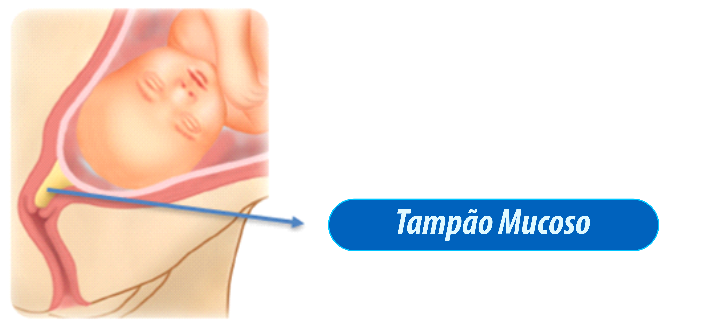

Capítulo 6
Sinais e sintomas de
trabalho de parto
Sumário
▼
Capítulo 1
Capítulo 2
Capítulo 3
Capítulo 4
Capítulo 5
Capítulo 6
Capítulo 7
Capítulo 8
Capítulo 10
Capítulo 11
As informações deste capítulo são importantes para que o
ACS informe a gestante e sua família sobre os sinais de trabalho de parto, para que ela possa ir no momento correto à maternidade.
6.1 Perda de tampão mucoso13:
- Secreção espessa e gelatinosa produzida pelo colo do útero com função de proteção do feto;
- Pode ser liberado pelo canal vaginal dias ou semanas antes do parto, por isso sua saída NÃO indica início do trabalho de parto imediato, significa apenas que o corpo está se preparando para o nascimento da criança;
- Sua saída NÃO indica a ida para a maternidade, sendo necessário apenas a mulher informar o ocorrido para a enfermeira ou o médico na próxima consulta de pré-natal.
Seu aspecto lembra clara de ovo, podendo se apresentar transparente, branco-amarelado, amarronzado ou com traços de sangue vermelho-vivo, sem que a variedade de cor indique risco13.
Imagem 5 - Localização do tampão mucoso.

Fonte: Retirada de Rezende Obstetrícia Fundamental14.
Imagem 6 - Possíveis aspectos do tampão mucoso.

Fonte: Acervo das autoras (2024).
6.2 Rompimento da bolsa amniótica:
“rompimento da bolsa das águas”
- A bolsa amniótica é uma membrana cheia de líquido que envolve e protege o feto durante toda a gestação;15
- O rompimento da bolsa pode acontecer na forma de gotejamento constante ou de jato mais intenso pelo canal vaginal, sendo um processo indolor15;
- Sua coloração normal é clara/transparente, e com odor semelhante a água sanitária.
No municipio de Senhor do Bonfim, a recomendação é: Assim que a bolsa romper, a mulher deve procurar a materindade IMEDIATAMENTE.
Imagem 7 - Localização da bolsa amniótica.
Fonte: Retirada de Rezende Obstetrícia Fundamental14.
6.3 Contrações uterinas14-15:
- É comum que a partir do último trimestre de gestação, a mulher apresente o que chamamos de contrações de treinamento;
- As contrações de treinamento são normalmente indolores, onde a barriga da gestante fica rígida por alguns segundos, porém logo passa;
- Já as contrações que indicam o trabalho de parto começam geralmente de maneira suave, com pouca dor, e depois vão se intensificando tanto no tempo de duração, quanto na intensidade da dor (assemelhando-se a cólicas menstruais fortes);
- É importante orientar que ela se encaminhe para a maternidade quando sentir contrações ritmadas, ou seja, 3 contrações em 10 minutos, onde cada contração dure pelo menos 40 segundos a 1 minuto, e esse ritmo permaneça por pelo menos 1 hora.
É importante que a mulher só procure a maternidade conforme orientado pelo profissional de saúde (rompimento de bolsa ou 3 contrações a cada 10 minutos), para evitar idas desnecessárias à maternidade e consequente estresse ou ansiedade da gestante e seus familiares.